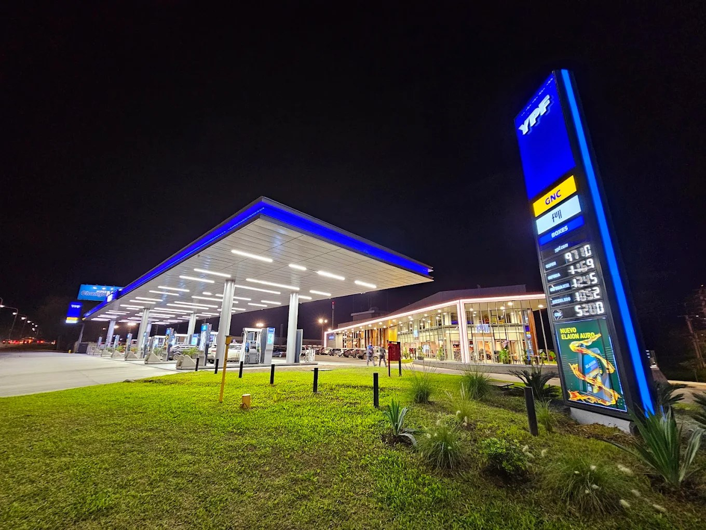

Ubicación
Cómo llegar a GeoGas Tucumán.
Accedé a las tres ubicaciones principales de GeoGas Tucumán y elegí la más cómoda para tu recorrido.

Ubicación
Accedé a las tres ubicaciones principales de GeoGas Tucumán y elegí la más cómoda para tu recorrido.
